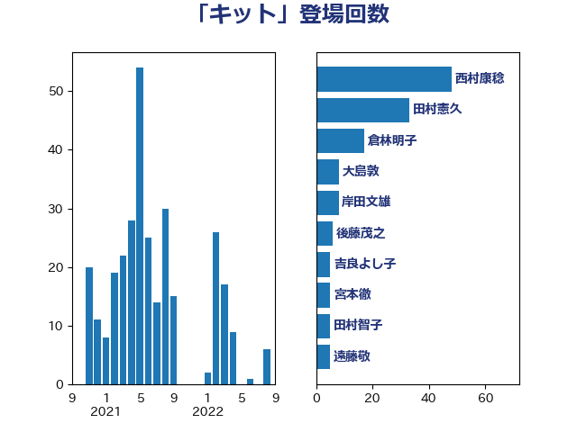

単語「キット」

| 西村康稔 | 自由民主党 | 48 回 |
| 田村憲久 | 自由民主党 | 33 回 |
| 倉林明子 | 日本共産党 | 17 回 |
| 大島敦 | 立憲民主党 | 8 回 |
| 岸田文雄 | 自由民主党 | 8 回 |
| 後藤茂之 | 自由民主党 | 6 回 |
| 吉良よし子 | 日本共産党 | 5 回 |
| 宮本徹 | 日本共産党 | 5 回 |
| 田村智子 | 日本共産党 | 5 回 |
| 遠藤敬 | 日本維新の会 | 5 回 |
| 加藤勝信 | 自由民主党 | 3 回 |
| 山際大志郎 | 自由民主党 | 3 回 |
| 末松信介 | 自由民主党 | 3 回 |
| 片山大介 | 日本維新の会 | 3 回 |
| 石井苗子 | 日本維新の会 | 3 回 |
| 蓮舫 | 立憲民主党 | 3 回 |
| 高橋千鶴子 | 日本共産党 | 3 回 |
| 鰐淵洋子 | 公明党 | 3 回 |
| 仁木博文 | 無所属 | 2 回 |
| 塩田博昭 | 公明党 | 2 回 |
| 小泉進次郎 | 自由民主党 | 2 回 |
| 山本博司 | 公明党 | 2 回 |
| 東徹 | 日本維新の会 | 2 回 |
| 自見はなこ | 自由民主党 | 2 回 |
| 藤田文武 | 日本維新の会 | 2 回 |
| 野田国義 | 立憲民主党 | 2 回 |
| 長妻昭 | 立憲民主党 | 2 回 |
| 阿部知子 | 立憲民主党 | 2 回 |
| 高橋光男 | 公明党 | 2 回 |
| こやり隆史 | 自由民主党 | 1 回 |
| 上田清司 | 国民民主党 | 1 回 |
| 井上信治 | 自由民主党 | 1 回 |
| 伊佐進一 | 公明党 | 1 回 |
| 伊藤俊輔 | 立憲民主党 | 1 回 |
| 大西健介 | 立憲民主党 | 1 回 |
| 山井和則 | 立憲民主党 | 1 回 |
| 山添拓 | 日本共産党 | 1 回 |
| 平木大作 | 公明党 | 1 回 |
| 後藤祐一 | 立憲民主党 | 1 回 |
| 杉尾秀哉 | 立憲民主党 | 1 回 |
| 柚木道義 | 立憲民主党 | 1 回 |
| 梅村みずほ | 日本維新の会 | 1 回 |
| 梶山弘志 | 自由民主党 | 1 回 |
| 水岡俊一 | 立憲民主党 | 1 回 |
| 浜地雅一 | 公明党 | 1 回 |
| 田嶋要 | 立憲民主党 | 1 回 |
| 秋野公造 | 公明党 | 1 回 |
| 稲富修二 | 立憲民主党 | 1 回 |
| 笹川博義 | 自由民主党 | 1 回 |
| 芳賀道也 | 国民民主党 | 1 回 |
| 萩生田光一 | 自由民主党 | 1 回 |
| 藤井比早之 | 自由民主党 | 1 回 |
| 西岡秀子 | 国民民主党 | 1 回 |
| 赤澤亮正 | 自由民主党 | 1 回 |